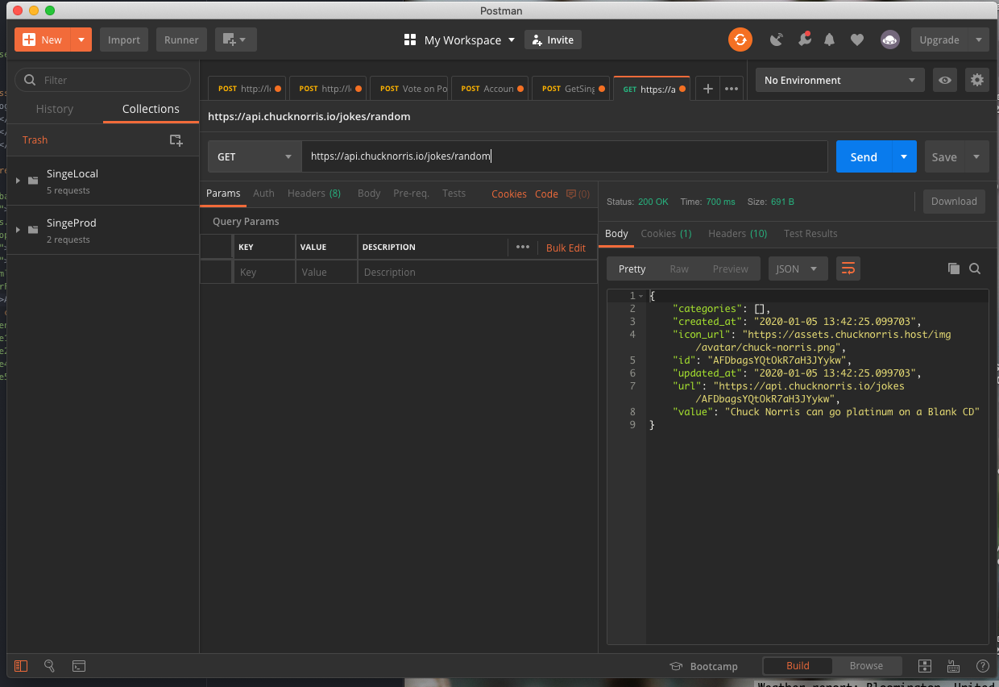

APIs are a huge part of how the modern internet functions. API stands for Application Programming Interface. It referrs to an interface in front of a resource of some sort (traditionally a database) that allows for simpler and more secure transactions than allowing the client to interact directly with the database itself.
APIs are built properly when they have the principles of REST included in the design. This means they seperate all functionality of retreiving information from the client (allowing for clients from many different platforms to use the API), present a uniform interface accross the board of functionality, and they must take stateless requests (meaning no prior context is needed for an API to retreive or manipulate information for this request).
In practice, API usage may show up as retreiving a news feed on a social media platform or submitting a web form to be added to a mailing list. However to debug an API it's better to use a program like "Postman". Postman allows you to create quick API requests and save them for further work, without having to build a project around it.
Below is an example of Postman being used to query the Chuck Norris Jokes API for a random joke. On the right, you can see the API has returned a JSON string with information including the random joke we originally requested
